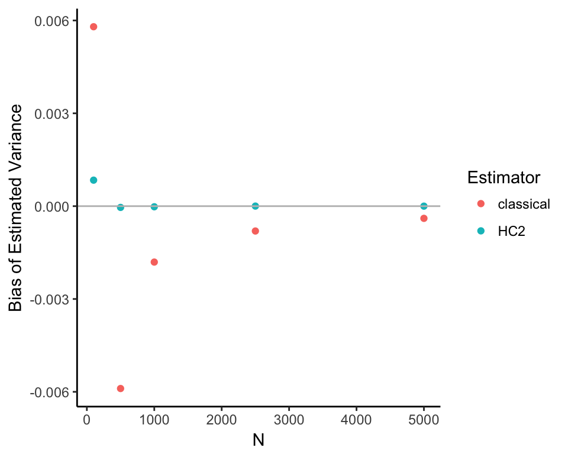

Simulations - OLS and Variance
Luke Sonnet
This document exposes the properties of different variance estimators using DeclareDesign and estimatr. More details about the variance estimators with references can be found in the technical notes.
Homoskedastic errors and fixed covariates
Under simple conditions with homoskedasticity (i.e., all errors are drawn from a distribution with the same variance), the classical estimator of the variance of OLS should be unbiased. In this section I demonstrate this to be true using DeclareDesign and estimatr.
library(DeclareDesign)
library(ggplot2)First, let’s take a simple set up:
\[ \begin{aligned} \mathbf{y} &= \mathbf{X}\beta + \epsilon, \\ \epsilon_i &\overset{i.i.d.}{\sim} N(0, \sigma^2). \end{aligned} \]
For our simulation, let’s have a constant and one covariate, so that \(\mathbf{X} = [\mathbf{1}, \mathbf{x_1}]\), where \(\mathbf{x_1}\) is a column vector of a covariate drawn from a standard normal distribution. Let’s also assume that are covariates are fixed, rather than stochastic. Let’s draw the data we will use.
set.seed(41)
dat <- data.frame(x = rnorm(50))The function
\[ \epsilon_i \overset{i.i.d.}{\sim} N(0, \sigma^2), \] encodes the assumption of homoskedaticity. Because of these homoskedastic errors, we know that the true variance of the coefficients with fixed covariates is
\[ \mathbb{V}[\widehat{\beta}] = \sigma^2 (\mathbf{X}^\top \mathbf{X})^{-1}, \]
where I hide conditioning on \(\mathbf{X}\) for simplicity.
Let’s compute the true variance for our dataset.
sigmasq <- 4
# Build the X matrix with intercept
Xmat <- cbind(1, dat$x)
# Invert XtX
XtX_inv <- solve(crossprod(Xmat))
# Get full variance covariance matrix
true_var_cov_mat <- sigmasq * XtX_invBut for this example, we are only going to focus on the variance for the covariate, not the intercept, so let’s store that variance.
true_varb <- true_var_cov_mat[2, 2]
true_varb## [1] 0.07831866Now, using DeclareDesign, let’s specify the rest of the data generating process (DGP). Let’s set \(\beta = [0, 1]^\top\), so that the true DGP is \(\mathbf{y} = \mathbf{x_1} + \epsilon\).
simp_pop <- declare_population(
epsilon = rnorm(N, sd = 2),
y = x + epsilon
)Now let’s tell DeclareDesign that our target, our estimand, is the true variance.
varb_estimand <- declare_estimand(true_varb = true_varb)Our estimator for this estimand will be the classical OLS variance estimator, which we know should be unbiased:
\[ \widehat{\mathbb{V}[\widehat{\beta}]} = \frac{\mathbf{e}^\top\mathbf{e}}{N - K} (\mathbf{X}^\top \mathbf{X})^{-1}, \]
where the residuals \(\mathbf{e} = \mathbf{y} - \mathbf{X}\widehat{\beta}\), \(N\) is the number of observations, and \(K\) is the number of regressors—two in our case. We can easily get this estimate of the variance by squaring the standard error we get out from lm_robust in estimatr. Let’s tell DeclareDesign to use that estimator and get the coefficient on the \(\mathbf{x}_1\) variable.
lmc <- declare_estimator(
y ~ x,
model = estimatr::lm_robust,
se_type = "classical",
estimand = varb_estimand,
coefficient_name = "x"
)Now, we want to test for a few results using Monte Carlo simulation. Our main goal is to show that our estimated variance is unbiased for the true variance (our estimand). We can do this by comparing the mean of our estimated variances to the true variance. We can also show that the standard error of our coefficient estimate is the same as the standard deviation of the sampling distribution as our coefficient and that the coverage of our 95 percent confidence intervals is indeed 95 percent.
# First declare all the steps of our design, starting with our fixed data
classical_design <- declare_design(
dat,
simp_pop,
varb_estimand,
lmc
)
# Declare a set of diagnosands that help us check if
# we have unbiasedness
my_diagnosands <- declare_diagnosands(
`Bias of Estimated Variance` = mean(se^2 - estimand),
`Bias of Standard Error` = mean(se - sd(est)),
`Coverage Rate` = mean(1 <= ci_upper & 1 >= ci_lower),
`Mean of Estimated Variance` = mean(se^2),
`True Variance` = estimand[1]
)
# Run 25000 simulations
set.seed(25)
dig <- diagnose_design(
classical_design,
sims = 25000,
diagnosands = my_diagnosands,
parallel = TRUE
)Our diagnosands can help us see if there is any bias. Note that the standard error of the diagnosands is a useful tool that let’s us know whether our estimated bias, or any other diagnosand, is simply an artifact of simulation noise or if it appears to be precisely estimated via simulation.
| Diagnosand | |
|---|---|
| True Variance | 0.07832 |
| Mean of Estimated Variance | 0.07849 |
| Bias of Estimated Variance | 0.00017 |
| se(Bias of Estimated Variance) | 0.00010 |
As we can see the bias is very close to zero and because the standard error is not much smaller than the bias, we can be reasonably certain that the only reason the bias is not exactly zero is due to simulation error. We can also see this visually, using a density plot of estimated variances with a line for the true variance.

We can also show that the standard error is unbiased for the standard deviation of the sampling distribution of \(\beta\) and that the coverage is appropriate.
| Diagnosand | |
|---|---|
| Bias of Standard Error | -0.00116 |
| se(Bias of Standard Error) | 0.00123 |
| Coverage Rate | 0.95164 |
| se(Coverage Rate) | 0.00126 |
Heteroskedastic errors and fixed covariates
Now let’s use the same fixed data set-up, but now let’s introduce heteroskedasticity. In this case, the variance of the errors is different across units (i.e. \(\sigma^2_i \neq \sigma^2_j\) for some units \(i\) and \(j\). If this variance of the errors is not independent of the regressors, the “classical” variance will be biased and inconsistent. Meanwhile, heteroskedastic-consistent variance estimators, such as the HC2 estimator, are consistent and normally less biased than the “classical” estimator. Let’s demonstrate this using DeclareDesign. First, let’s specify the variance of the errors to be strongly correlated with \(x\).
dat <- fabricate(
dat,
noise_var = 1 + (x - min(x))^2
)
# Plot shows variance of errors increasing with x
plot(dat$x, dat$noise_var, xlab = "x", ylab = "sigmasq_i")
Note that the general form of the true variance with fixed covariates is:
\[ \mathbb{V}[\widehat{\beta}] = (\mathbf{X}^\top \mathbf{X})^{-1} \mathbf{X}^\top \mathbf{\Phi} \mathbf{X} (\mathbf{X}^\top \mathbf{X})^{-1}, \]
where \(\mathbf{\Phi}\) is the variance covariance matrix of the errors, or \(\mathbf{\Phi} = \mathbb{E}[\epsilon\epsilon^\top]\). In the above case with homoskedasticity, we assumed \(\mathbf{\Phi} = \sigma^2 \mathbf{I}\) and were able to simplify. Now, as in the standard set up for heteroskedasticity, we set \(\mathbf{\Phi}\) to be a diagonal matrix where noise_var, the variance for each unit’s error, is on the diagonal. Using that error structure and the error for each unit, we can estimate the true variance.
Xmat <- with(dat, cbind(1, x))
XtX_inv <- solve(crossprod(Xmat))
varb <- tcrossprod(XtX_inv, Xmat) %*% diag(with(dat, noise_var)) %*% Xmat %*% XtX_inv
true_varb_het <- varb[2, 2]
true_varb_het## [1] 0.1473923Now let’s use DeclareDesign to test whether HC2 is less biased in this example than classical standard errors. However, I will use another feature of DeclareDesign where I can create a design template. This allows me to easily pass different datasets (i.e., of different sizes) so that I can test the properties of the estimator across different datasets.
# This creates a template that takes some fixed data
# that has x and noise_var. Then for that data, it creates
# a single design that you can then simulate many times to get
# the properties you are interested in
fixed_dat_het_design_temp <- function(dat) {
# Get true variance for this data
Xmat <- with(dat, cbind(1, x))
XtX_inv <- solve(crossprod(Xmat))
varb <- tcrossprod(XtX_inv, Xmat) %*% diag(with(dat, noise_var)) %*% Xmat %*% XtX_inv
true_varb_het <- varb[2, 2]
# Population function now has heteroskedastic noise
simp_pop <- declare_population(
epsilon = rnorm(N, sd = sqrt(noise_var)),
y = x + epsilon
)
varb_het_estimand <- declare_estimand(true_varb_het = true_varb_het)
# Now we declare the two estimators
lmc <- declare_estimator(
y ~ x,
model = estimatr::lm_robust,
se_type = "classical",
estimand = varb_het_estimand,
coefficient_name = "x",
label = "classical"
)
lmr_hc2 <- declare_estimator(
y ~ x,
model = estimatr::lm_robust,
se_type = "HC2",
estimand = varb_het_estimand,
coefficient_name = "x",
label = "HC2"
)
# We return the design so we can diagnose it
return(
declare_design(
dat,
simp_pop,
varb_het_estimand,
lmc,
lmr_hc2
)
)
}So let’s use the same diagnosands as above to test the properties of our dataset with heteroskedasticity.
# Create a design using our template and the data we have been using
het_design <- fixed_dat_het_design_temp(dat)
dig_het <- diagnose_design(
het_design,
sims = 10000,
diagnosands = my_diagnosands,
parallel = TRUE
)| Classical Est. | HC2 | |
|---|---|---|
| True Variance | 0.14739 | 0.14739 |
| Mean of Estimated Variance | 0.11249 | 0.14624 |
| Bias of Estimated Variance | -0.03490 | -0.00115 |
| se(Bias of Estimated Variance) | 0.00027 | 0.00072 |
| Bias of Standard Error | -0.04947 | -0.01035 |
| se(Bias of Standard Error) | 0.00249 | 0.00254 |
| Coverage Rate | 0.91670 | 0.93700 |
| se(Coverage Rate) | 0.00250 | 0.00217 |
As you can see, the bias for the HC2 errors is much closer to zero, whereas the bias for the classical error is much larger, especially when compared to the standard error of the bias diagnosand. Let’s look how the bias change as the sample size changes.
Ns <- c(100, 500, 1000, 2500, 5000)
diags <- vector("list", length(Ns))
set.seed(42)
for (i in seq_along(Ns)) {
# Generate ONE fixed dataset
dat <- fabricate(
N = Ns[i],
x = rnorm(N),
noise_var = 1 + (x - min(x))^2
)
des <- fixed_dat_het_design_temp(dat)
diags[[i]] <- diagnose_design(
des,
sims = 10000,
diagnosands = my_diagnosands
)$diagnosands
diags[[i]]$N <- Ns[i]
}
As you can see, the HC2 variance tends to be conservative and is consistent, converging to the true value as the sample size increases, while the classical error is biased downwards even as the sample sizes increases.